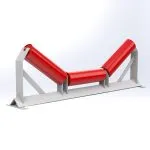
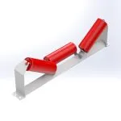
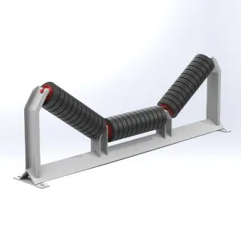
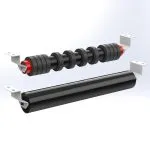
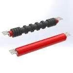
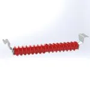
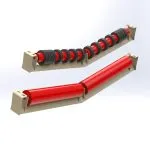
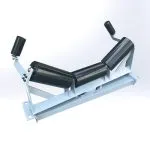
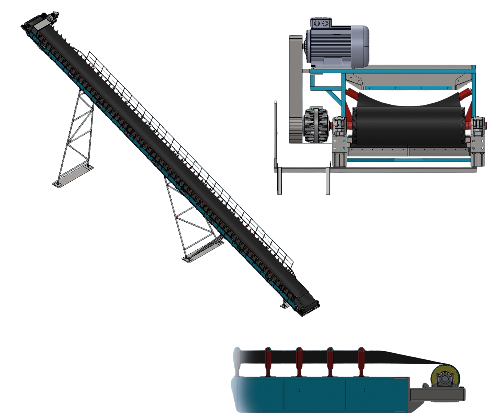

Gelişmiş taşıma sistemleri için dayanıklı ve güvenilir konveyör istasyon çözümleri.

Bant ve taşıma bölümündeki yükü destekleyerek güvenli bir taşıma sağlar. 20°, 35°, 45° açılarda özel olarak üretilmektedir.
Teklif Al
Ruloların hafifçe kaydırılmış / şaşırtmalı olarak konumlandırıldığı bu sistem, bantı merkezleyip hizalamayı kolaylaştırarak operasyon kararlılığını artırır.
Teklif Al
Yükleme noktalarında düşen malzemelerin etkisini emerek bantı korur. Standart açıların dışında özel projelere uygun üretim de yapılabilir.
Teklif Al
Konveyör bandının dönüş kısmını desteklemek için kullanılır. Yapışkan veya aşındırıcı olmayan standart taşımacılık sistemlerinde idealdir.
Teklif Al
Yapışkan, korozyona yol açan veya aşındırıcı özellikteki zorlu malzemelerin bulunduğu dönüş hatlarını desteklemek için özel kauçuk disklerle donatılmıştır.
Teklif Al
Sadece kendini temizlemekle kalmaz, aynı zamanda zorlu dönüş şeridinde malzemeyi sıyırarak bant sapması sorunlarını en aza indirir.
Teklif Al
Konveyör bandının dönüş hattında V formunda konumlanmış makaralarla bantın merkezde kalmasını sağlar, sapmayı engeller ve dayanıklılığı artırır.
Teklif Al
Bant eksenindeki kaymaları otomatik olarak düzelterek taşıma işleminin kesintisiz olarak sürekli merkez konumda kalmasını sağlayan taşıyıcı istasyonlardır.
Teklif Al
Sistemlerin iskeleti olan dayanıklı şase yapısı ve yüksek performanslı bantlarıyla taşıma süreçlerinde hız ve güven sağlar.
Teklif Al